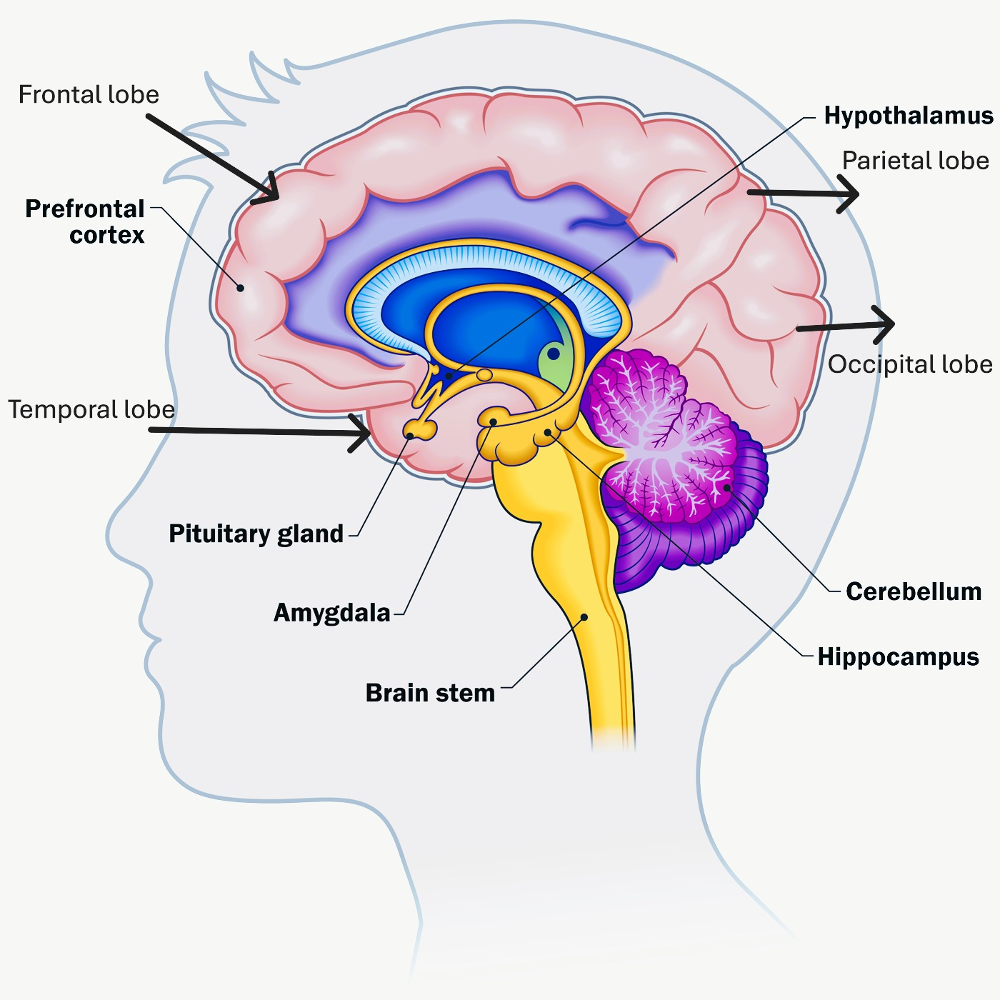

🧠 What Is the Brain?
What Is the Brain? The brain is the central organ of the human nervous system. Often compared to a computer or a command center, the brain controls all your thoughts, actions, emotions, and bodily processes. Without it, we couldn’t breathe, speak, walk, or think. It sits inside the skull for protection and is surrounded by cerebrospinal fluid that cushions it from injury. Despite its relatively small size (about 1.4 kg in adults), it is one of the most energy-consuming organs, using about 20% of your body's energy. The brain is part of the central nervous system (CNS), which also includes the spinal cord. Together, they send and receive signals between the brain and every part of your body.
2. 🧩 The Structure of the Brain: Breaking It Down
Let’s explore the three major parts of the brain and what they do in more detail.
🔹 Cerebrum – The Thinking Brain
- Largest part of the brain.
- Controls voluntary movements, thinking, learning, judgment, memory, and emotions.
- Divided into two hemispheres:
- Left hemisphere: Language, math, and logical reasoning.
- Right hemisphere: Creativity, music, spatial awareness.
- ➤ Four Main Lobes of the Cerebrum:
- Frontal Lobe: Planning, decision-making, personality.
- Parietal Lobe: Touch, pressure, pain, and body awareness.
- Temporal Lobe: Hearing, memory, language comprehension.
- Occipital Lobe: Processes visual information.
🔹 Cerebellum – The Coordinator
Located beneath the cerebrum. Maintains balance, posture, and smooth coordination of movements. Without it, activities like walking or playing sports would be difficult.
🔹 Brainstem – The Life Support System
Connects the brain to the spinal cord. Regulates automatic body functions, including:
- Breathing
- Heartbeat
- Blood pressure
- Digestion
Also controls basic reflexes like coughing and sneezing.
3. 🔌 How the Brain Communicates
The brain communicates using a massive network of specialized cells called neurons.
➤ What Are Neurons?
Neurons are the messengers of the brain. The brain contains about 86 billion neurons. Each neuron connects to thousands of other neurons, creating complex pathways.
➤ How Messages Travel:
Neurons send electrical impulses along their bodies. At the end of each neuron is a gap called a synapse. Chemicals called neurotransmitters carry the signal across the synapse to the next neuron. This fast communication allows you to:
- Feel sensations in milliseconds
- React quickly to danger
- Learn and store information
- Perform coordinated movements
4. 🧠 Key Functions of the Brain
Let’s take a deeper look at the main jobs the brain performs every second.
- ✔️ Thinking and Reasoning: The brain allows us to solve problems, analyze situations, and make decisions. Critical thinking and logic come from the prefrontal cortex in the frontal lobe.
- ✔️ Learning and Memory: The brain records information, both short-term and long-term. The hippocampus, located in the temporal lobe, plays a major role in memory formation.
- ✔️ Emotions and Feelings: Controlled by the limbic system, especially the amygdala. The brain processes and manages emotions like happiness, sadness, anger, and fear. Emotions help us build relationships and respond to life situations.
- ✔️ Movement and Coordination: The motor cortex sends instructions to your muscles. The cerebellum fine-tunes these movements for balance and accuracy.
- ✔️ Automatic Body Functions: The brainstem handles automatic, life-sustaining activities like breathing, sleeping, heart rate regulation, and blood pressure. These happen even when you're unconscious or asleep.
👀The Brain and the Five Senses
The brain processes all the input from our environment through the five senses:
- 👁️ Sight (Vision): The occipital lobe interprets visual signals from the eyes. It helps you understand shapes, colors, movement, and distance.
- 👂 Hearing (Auditory Processing): The temporal lobe interprets sound from your ears. This includes recognizing voices, music, and language.
- 👃 Smell (Olfaction): The olfactory bulb, near the front of the brain, processes smells. Closely linked to memory — certain smells can trigger strong memories.
- 👅 Taste (Gustation): The brain interprets taste from the tongue’s taste buds (sweet, salty, sour, bitter, umami). Taste is often influenced by smell.
- ✋ Touch (Tactile Sense): The parietal lobe handles sensations like pressure, texture, temperature, and pain.
🤯Fun and Fascinating Brain Facts
Here are some interesting and surprising facts about the human brain:
- The human brain can generate about 23 watts of power — enough to power a light bulb.
- Brain cells start forming before birth — as early as 3 weeks after conception.
- Your brain is capable of creating new neural connections throughout life — this is called neuroplasticity.
- Yawning may help cool down the brain when it’s overheated.
- The brain cannot feel pain, even though it processes pain from the rest of the body.
💡How to Keep Your Brain Healthy
Brain health is important at every age. Here are scientifically supported and safe ways to support a strong, healthy brain:
🍎 Eat a Brain-Friendly Diet
Foods rich in omega-3 fatty acids, antioxidants, and vitamins are beneficial. Examples include:
- Fatty fish (salmon, tuna)
- Berries (blueberries, strawberries)
- Leafy greens (spinach, kale)
- Nuts and seeds (walnuts, flaxseeds)
💤 Sleep Well
Aim for 7–9 hours of sleep per night. During sleep, your brain:
- Cleans out waste
- Consolidates memories
- Repairs itself
🏃 Stay Physically Active
Exercise increases blood flow to the brain. Activities like walking, dancing, and swimming support memory and mood.
📚 Keep Learning
Reading, learning new skills, or playing memory games stimulate brain cells and build new connections.
🧘 Manage Stress
Chronic stress can damage brain structures. Try safe, healthy stress-reducing practices like:
- Meditation
- Deep breathing
- Journaling
- Talking to a supportive friend or counselor
👶🧓The Brain Throughout Life
🧒 Childhood
The brain develops rapidly during early years. Learning, play, and nurturing relationships are key.
🧑 Adulthood
The brain reaches full maturity in your mid-20s. Staying mentally and physically active helps keep the brain strong.
👴 Older Age
It’s natural for some cognitive abilities to slow down. However, many people maintain sharp thinking well into old age — especially if they engage in healthy lifestyle habits.
🧠Why Brain Health Matters
The brain is involved in every single thing we do. That’s why it’s essential to care for it throughout our lives.
Benefits of a healthy brain:
- Better focus and memory
- Emotional stability
- Stronger learning skills
- Clear decision-making
- Longer mental sharpness
When we keep our brain healthy, we improve not just our mental health, but also our quality of life.
🧠Final Thoughts
The brain is the most vital and complex organ in the body. It allows us to think, feel, move, and experience the world. From childhood to old age, the brain is constantly adapting and evolving.
By understanding how the brain works and how to care for it, we can protect our mental abilities and enhance our lives in meaningful ways.
🧠Neuroplasticity – The Brain’s Amazing Ability to Adapt
What Is Neuroplasticity?
Neuroplasticity refers to the brain’s ability to:
- Reorganize itself
- Form new neural connections
- Repair damaged areas (to some extent)
For example:
- When you learn a new language, your brain forms new connections.
- If one part of the brain is injured, another part may take over some of its functions (especially in younger people).
Why Is This Important?
Neuroplasticity is key to:
- Learning new skills
- Recovering from brain injuries (like strokes)
- Adapting to new situations
- Maintaining cognitive function as you age
🧠Brain Hemispheres: Left Brain vs. Right Brain – Myth vs. Fact
You’ve probably heard that people are either “left-brained” (logical) or “right-brained” (creative). This is based on real science — but it's often misunderstood.

What’s True:
The brain has two hemispheres: left and right. Each side controls the opposite side of the body. Some functions are stronger on one side than the other:
- Left hemisphere: language, math, logic
- Right hemisphere: art, music, emotion, spatial awareness
What’s Not True:
You are not only “left-brained” or “right-brained.” Everyone uses both hemispheres all the time. Creativity and logic often work together in the brain.
Fun Example: Solving a math problem involves the left hemisphere. But drawing a graph to represent it? That’s the right hemisphere at work!
🧪Brain and Learning: How We Learn Best
Understanding how the brain learns can help students, teachers, and parents support better learning experiences.
Key Brain-Based Learning Tips:
- Repetition builds memory – Repeating information strengthens neural connections.
- Breaks boost brainpower – Short breaks during study help the brain recharge.
- Sleep locks in learning – The brain processes and stores new info during sleep.
- Emotion affects memory – We remember things better when emotions are involved (like a fun lesson or meaningful story).
- Multisensory learning works best – Using sight, sound, and touch together improves understanding.
🧠What Happens When the Brain Gets Tired?
The brain, like any other organ, can get tired — especially after hours of focus or stress.
Signs of Mental Fatigue:
- Trouble concentrating
- Forgetting things easily
- Irritability
- Slower thinking
What Helps?
- Take breaks during tasks
- Stay hydrated
- Get enough sleep
- Eat a nutritious snack (like fruit or nuts)
- Go for a walk — movement refreshes your brain
Your brain needs downtime too. That’s why relaxing activities like listening to music, daydreaming, or even just sitting quietly can be helpful.
15. 🎮 Does Technology Help or Hurt the Brain?
This is a common question, especially for parents and educators.
The Good:
- Educational apps and games can stimulate learning
- Video games can improve hand-eye coordination, strategy, and problem-solving
- The internet allows easy access to information
The Challenges:
- Too much screen time may reduce attention span
- Blue light from screens can affect sleep
- Passive content (like endless videos) may limit active thinking
A Balanced Approach:
Use technology as a tool, not a replacement for real-world learning. Combine screen time with:
- Hands-on activities
- Physical movement and play
- Face-to-face social interactions
16. 🧒 The Brain in Children and Teens
The brain develops very quickly in the early years of life — but it doesn’t fully mature until about age 25.
In Children:
- The brain is extremely plastic — it learns and adapts fast
- Experiences during this time shape brain structure and function
- Safe environments, love, and stimulation are key
In Teens:
- The emotional parts of the brain mature faster than the logical parts
- Teens may feel emotions deeply and make quick decisions
- The prefrontal cortex (responsible for planning and impulse control) is still developing
17. 🧓 The Brain and Aging: Staying Sharp Later in Life
As we age, it's normal for the brain to slow down a little — but it doesn’t mean you’ll lose your memory or intelligence.
Common Brain Changes with Age:
- Slower processing speed
- Difficulty multitasking
- Occasionally forgetting names or words
How to Stay Mentally Sharp:
- Keep learning — read, write, take classes
- Stay social — talking with others boosts brain health
- Do puzzles and brain games
- Keep moving — physical activity helps memory and mood
🧠 The Brain and Everyday Mental Wellness
While we avoid clinical discussions to stay AdSense-compliant, it's important to recognize that brain health plays a key role in overall well-being. Taking care of your brain helps support emotional balance and cognitive clarity.
Healthy Mental Habits to Support Brain Function:
- 🛌 Get enough sleep
- 🥗 Eat nourishing, balanced meals
- 🗣️ Talk to people you trust
- 🎨 Do things that bring you joy
- 😌 Practice stress-reducing techniques like deep breathing
Small, daily habits like these help support brain performance and emotional resilience — without needing to diagnose or treat any condition.
📚 Fun Brain Activities to Try at Home or School
Engaging your brain with creative and logical tasks can help build skills like memory, focus, and problem-solving. These activities are screen-free and great for learners of all ages:
- 🧩 Solve jigsaw puzzles
- 📝 Try crosswords or word searches
- 🎨 Draw, color, or paint
- 🎶 Listen to music and identify different instruments
- 👣 Try safe movement challenges like walking backward
- 🧠 Memorize poems or new words
- 🧮 Play math or logic games
These fun activities can help strengthen critical thinking, creativity, and brain flexibility — all while being enjoyable and accessible.
📘 Conclusion: Your Brain – A Powerful Everyday Tool
The human brain isn’t just an organ — it’s the center of your thoughts, emotions, and creativity. It allows you to:
- Make smart decisions
- Learn and adapt
- Express feelings and connect with others
- Stay alert and safe
- Enjoy art, music, and life
Understanding and caring for your brain helps you lead a healthier, more fulfilling life. Whether you're a student, parent, or curious learner, knowing how your brain works can empower you to make better choices every day.
🧠 The Brain’s Role in Language and Communication
One of the brain’s most remarkable jobs is helping us understand and use language. Whether speaking, reading, writing, or using sign language, the brain is actively translating thoughts into communication.
Key Brain Areas for Language:
- Broca’s Area: Located in the frontal lobe (usually left hemisphere), it helps produce speech and form sentences.
- Wernicke’s Area: Located in the temporal lobe, it helps understand spoken and written language.
- Arcuate Fasciculus: A bundle of nerve fibers connecting these two regions, enabling smooth communication.
Did You Know?
- Babies begin developing language centers even before birth.
- Bilingual individuals often show stronger memory and problem-solving skills.
- Damage to language areas can result in aphasia, affecting speech or comprehension.
💭 How the Brain Creates Thoughts
Thinking feels automatic, but it involves complex brain functions working together. Thoughts are shaped by:
- 🧠 Memory
- 👁️ Sensory input
- ❤️ Emotions
- 🎨 Imagination
These elements come together through patterns of neurons firing in connected networks — shaped by your experiences and habits over time.
The Prefrontal Cortex: Your Thinking Cap
This front region of the brain powers:
- Problem-solving
- Planning and decision-making
- Abstract thinking and imagination
Whether you're organizing your schedule or dreaming up a story, your prefrontal cortex is leading the charge.
😴 What Happens in the Brain During Sleep?
Even when your body rests, your brain stays active. Sleep is critical for:
- Memory consolidation: Sorting and storing what you learned.
- Emotional processing: Helping you deal with daily feelings and stress.
- Toxin removal: Cerebrospinal fluid cleanses waste from brain tissue.
- Dreaming: During REM sleep, vivid mental experiences occur.
Sleep also helps with:
- Repairing brain cells
- Improving focus and attention
- Boosting learning ability
Getting quality sleep is one of the best things you can do for your brain's performance and health.
🧠 Hormones and the Brain: How They Work Together
The brain and the endocrine system work closely to regulate emotions, body processes, and responses to stress. This partnership helps your body maintain balance — known as homeostasis.
The Hypothalamus – The Brain’s Hormone Boss
This tiny but powerful part of the brain controls hormone release through the endocrine system. It regulates:
- Hunger and thirst
- Body temperature
- Sleep cycles
- Stress responses
It sends signals to the pituitary gland, often called the “master gland,” which then directs other glands in the body to release hormones.
Brain and Mood Hormones
- Serotonin: Helps regulate mood and emotional balance
- Dopamine: Associated with motivation, pleasure, and reward
- Cortisol: The body’s main stress hormone
- Oxytocin: Encourages bonding, empathy, and trust
These hormones work with the brain to help manage mood, motivation, and stress responses in everyday life.
🚨 How the Brain Responds to Danger (Fight or Flight)
Your brain has built-in systems that help you survive dangerous situations. These responses happen fast — often before you even realize what’s happening.
The Amygdala: Your Internal Alarm System
The amygdala scans your surroundings for threats and helps trigger emergency responses, such as:
- Increased heart rate
- Heightened alertness
- Muscle tension
Fight, Flight, or Freeze
Depending on the situation, your brain may prepare you to:
- 🛡️ Fight – face the danger head-on
- 🏃♂️ Flight – escape from the threat
- 🧊 Freeze – stay still and unnoticed
This response can save lives in emergencies. But if the system is activated too often (due to chronic stress), it can affect your ability to concentrate, sleep, or relax.
🧬 Genetics and the Brain – What You Inherit
Your brain development is influenced by both your genes (nature) and your life experiences (nurture). Genetics can affect various aspects of your brain’s structure and function, such as:
- Brain size and shape
- How quickly you learn
- Your natural temperament
- Your risk of certain neurological conditions
But genes aren’t the whole story. Your experiences — including your diet, sleep, education, and physical activity — play a major role in how your brain functions over time.
Example: Two people with the same learning potential might perform differently depending on their environment, lifestyle, and support systems.
📈 How Scientists Study the Brain
Modern science has developed amazing tools to study how the brain works, how it changes over time, and how it responds to different situations.
Common Brain Research Tools:
- MRI (Magnetic Resonance Imaging): Creates detailed images of the brain’s structure.
- fMRI (Functional MRI): Shows real-time brain activity.
- EEG (Electroencephalogram): Measures electrical signals from brain cells.
- PET Scan: Detects chemical activity in the brain.
These tools help scientists study:
- Memory and learning
- Emotions and behavior
- Brain development
- Effects of injuries or conditions
As technology advances, brain research continues to unlock new insights into how we think, feel, and grow.
📊 Summary Table – Major Brain Areas and Functions
This quick reference chart highlights key parts of the brain and what they do:
| Brain Area | Main Function |
|---|---|
| Cerebrum | Thinking, memory, voluntary movement |
| Cerebellum | Balance, coordination, motor learning |
| Brainstem | Breathing, heart rate, digestion |
| Frontal Lobe | Planning, personality, problem-solving |
| Temporal Lobe | Hearing, language, memory |
| Parietal Lobe | Touch, spatial awareness |
| Occipital Lobe | Vision |
| Hippocampus | Memory formation |
| Amygdala | Emotion, especially fear |
| Hypothalamus | Hormone control, body temperature |
🧠 The Brain’s Role in Decision-Making
Every day, your brain makes countless decisions — from simple choices like what to eat, to complex ones like solving problems or planning for the future.
What Part of the Brain Makes Decisions?
The prefrontal cortex is in charge of high-level thinking. It helps with:
- Weighing pros and cons
- Planning ahead
- Controlling impulses and emotions
This region works closely with:
- Limbic system: Processes emotions
- Basal ganglia: Manages habits and automatic behaviors
Fast vs. Slow Thinking
- Fast decisions: Instinctive, emotional, based on past experience (e.g., quickly hitting the brakes)
- Slow decisions: More logical, thoughtful, and deliberate (e.g., planning a project or making a big life choice)
Fun Fact: Teenagers often take more risks because their prefrontal cortex is still developing — while their emotional brain regions are more active.
🧠 Brain Lateralization: Specialization of the Hemispheres
Even though the brain works as a whole, certain functions are more dominant in one hemisphere than the other. This is called brain lateralization.
Left Hemisphere
- Language and speech
- Logical reasoning
- Mathematics and analysis
- Grammar and vocabulary
Right Hemisphere
- Spatial awareness
- Creativity and art
- Facial recognition
- Intuition and emotional expression
⚠️ Myth Alert: People are not “left-brained” or “right-brained” — everyone uses both sides of the brain together!
🧠 The Brain and the Immune System
Yes — your brain and your immune system are closely connected. A healthy brain supports a well-functioning immune system, and vice versa.
How They Interact:
- The brain helps regulate immune responses through chemical messengers.
- Chronic stress can overstimulate brain regions like the amygdala, weakening immunity.
- Good sleep, mental health, and stress management support both brain function and immune strength.
That’s why taking care of your mental well-being — through sleep, mindfulness, and physical activity — is good for your whole body.
🧠 The Brain and Creativity
Creativity doesn’t reside in a single “creative center”—it’s a collaboration of multiple brain networks working together.
When you imagine, plan, or make something new, these networks become active:
- Default Mode Network (DMN): Active during daydreaming, reflection, and spontaneous thought.
- Executive Function Network: Helps you plan, evaluate, and refine creative ideas.
- Salience Network: Assists you in shifting attention between ideas or focus and disruption.
Creative acts like painting, writing, or playing music activate many brain regions—boosting both emotional and cognitive health.
🧠 The Brain and Technology
Digital tools can enhance learning, connection, and productivity—but they come with both benefits and risks.
Positive Impacts
- Enhanced hand–eye coordination
- Improved memory for visual patterns and problem-solving tasks
- Greater access to knowledge and learning tools
Risks of Overuse
- Shortened attention span
- Poorer sleep quality, especially from night-time screen use
- Reduced physical activity
Smart Tech Habits
- Use blue light filters in the evening
- Apply the 20‑20‑20 rule: every 20 minutes, look at something 20 feet away for 20 seconds
- Balance screen time with offline, real-world experiences
🧠 How Music Affects the Brain
Music is a powerful tool that engages both sides of the brain and boosts mental wellness.

Brain Benefits of Music
- Activates both hemispheres
- Increases dopamine — supporting mood and pleasure
- Strengthens memory (lyrics often stick easily)
- Reduces stress and relaxes the mind
- Aids focus—especially with calm or classical music
Playing an Instrument
- Boosts coordination and motor control
- Can increase brain volume in certain regions
- Enhances interplay between left and right brain
🧠 Multilingual Brains
Learning and using multiple languages builds new neural pathways and strengthens brain systems involved in executive control.
Benefits of Bilingualism or Multilingualism
- Better multitasking abilities
- Stronger memory and attention control
- Potential delay in age‑related cognitive decline
Brain imaging shows that bilingual speakers often have more gray matter in regions like the left inferior parietal lobe.
🧠 Can You Train Your Brain?
Absolutely! Your brain responds to challenge and variety—just like a muscle.
Brain-Training Ideas
- Memory games and challenges
- Logic puzzles or strategy games
- Learning a new language or skill
- Mindfulness meditation or focused practice
- Chess or other strategic board games
For real growth, vary your activities. Repeating the same task over and over eventually yields diminishing returns.
🧠 Emotions and the Brain
Emotions are not just felt—they’re processed through specific brain pathways.
| Emotion | Brain Region Involved |
|---|---|
| Fear | Amygdala |
| Pleasure / Reward | Nucleus Accumbens, Dopamine Pathways |
| Sadness | Prefrontal Cortex, Hippocampus |
| Love / Attachment | Hypothalamus (Oxytocin release) |
Emotional well-being supports brain health—so managing stress, nurturing healthy relationships, and getting enough rest matter greatly.
🧠 The Brain’s Electrical Activity – Brain Waves
Your brain communicates using electrical impulses. These impulses form patterns known as brain waves. Different frequency bands correspond to different mental states:
| Brainwave | Frequency Range | Mental State |
|---|---|---|
| Delta | 0.5–4 Hz | Deep sleep |
| Theta | 4–8 Hz | Light sleep, meditation |
| Alpha | 8–12 Hz | Relaxed, calm |
| Beta | 12–30 Hz | Active thinking, focus |
| Gamma | 30+ Hz | High-level learning, memory |
EEG machines can measure these waves, helping scientists study focus, sleep, and brain health.
🧠 The Brain and Imagination
Imagining something activates many of the same brain systems used in perceiving reality.
Which Brain Areas Participate?
- Visual cortex (for “seeing” images in your mind)
- Sensory regions (for feeling or imagining sensations)
- Emotional centers (such as the amygdala)
- Planning regions (like the prefrontal cortex)
We use imagination in: daydreaming, storytelling, visualization before performing tasks, and creative problem-solving.
🧠 Fun Tip: Athletes and performers often mentally rehearse their actions — imagining success before doing it in real life.
🧠 How to Build a Brain-Friendly Lifestyle
Here’s a simple daily routine to support your brain’s health:
- Eat brain-healthy foods (fish, nuts, greens)
- Move daily (walking, exercise, stretching)
- Get 7–9 hours of quality sleep
- Learn something new (reading, exploring)
- Limit screens before bed
- Connect socially (talking, playing, teamwork)
- Reflect or practice gratitude
- Engage in relaxing hobbies (art, journaling, music)
This balanced approach supports your brain’s structure, chemical balance, emotional resilience, and cognitive function.
Final Thoughts – A Journey Worth Continuing
Your brain powers every dream, memory, idea, and decision. While we’re constantly learning more about its complexities, one truth remains: the more you understand your brain, the more you can nurture and protect it.